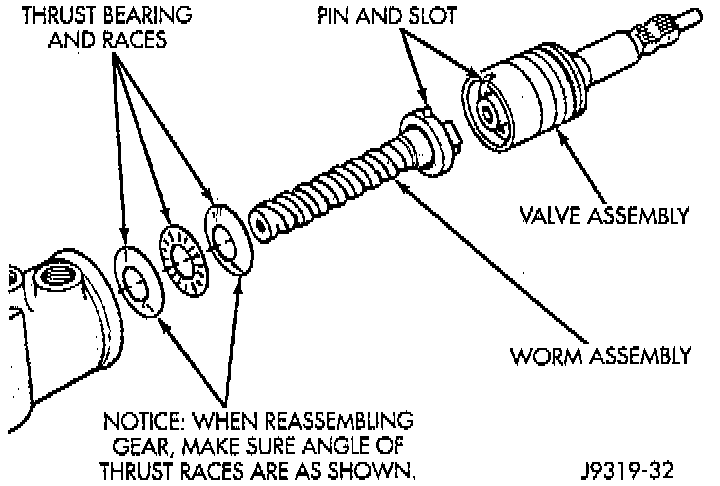
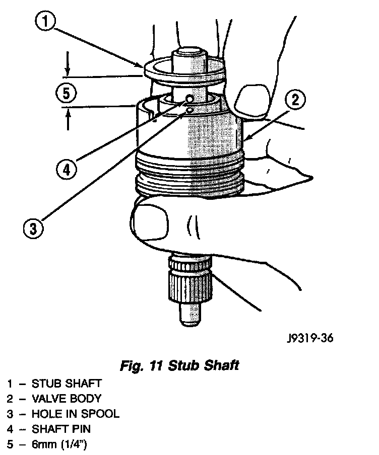
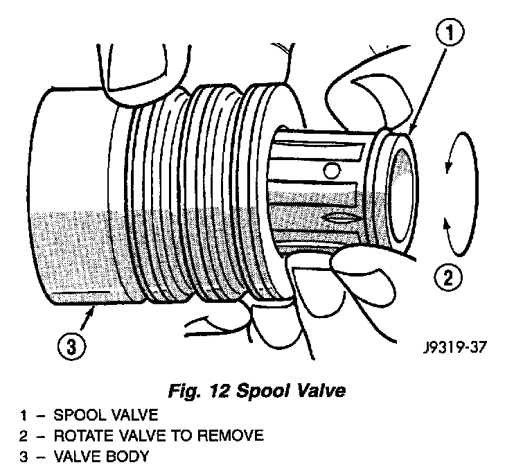
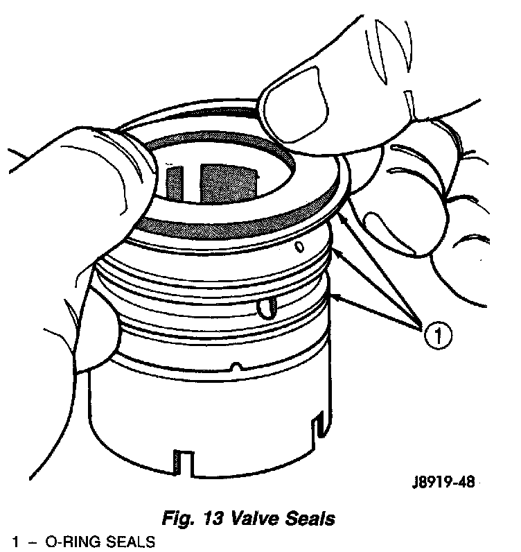
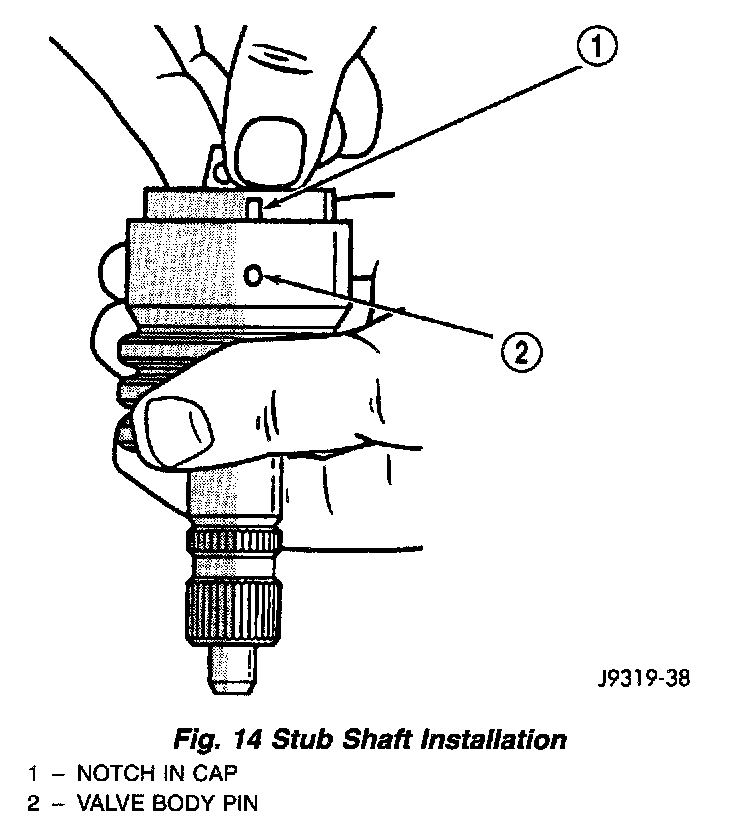

Spool Valve
NOTE: Steering gear must be removed from the vehicle for this procedure.REMOVAL
1. Remove adjuster plug, refer to Adjuster Plug Assembly Replacement.

2. Remove stub shaft and valve assembly.
Fig. 11:

3. Remove stub shaft from valve assembly by lightly tapping on a block of wood to loosen shaft cap. Then pull cap and valve body and disengage stub shaft pin from hole in valve body.
Fig. 12:

4. Remove valve spool by pulling and rotating from valve body.
Fig. 13:

5. Remove valve spool O-ring seal and valve body teflon rings and O-ring seals.
INSTALLATION
1. Install valve spool O-ring seal to valve spool.
2. Lubricate valve spool and O-ring seal with power steering fluid.
3. Install valve spool to valve body by pushing and rotating. Hole in valve spool for stub pin must be accessible from opposite end of valve body.
Fig. 14:

4. Assemble stub shaft to valve spool, if necessary and insert pin.
NOTE: Notch in stub shaft cap must fully engage. valve body pin and seat against valve body shoulder.
5. Install O-ring seals and teflon rings to valve body.
6. Lubricate O-ring seals and teflon rings with power steering fluid.
7. Install stub shaft and valve assembly to worm shaft. Line up worm shaft to slot in the valve assembly.
8. Install adjuster plug.
9. Adjust Thrust Bearing Preload Adjustment and Over-Center Adjustment.